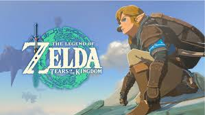
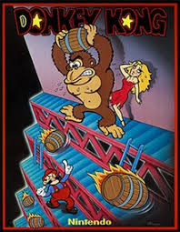
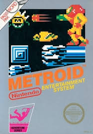
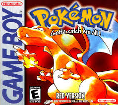
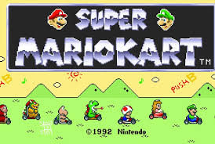
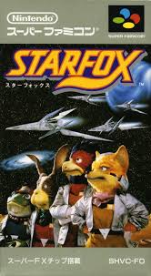
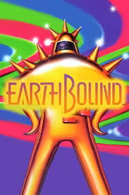
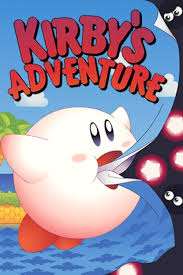

Classic Nintendo Games
-
Super Mario Bros. (1985)
The game that defined platformers and catapulted Mario into worldwide fame. "Super Mario Bros." set players on a journey through the Mushroom Kingdom to rescue Princess Toadstool, featuring timeless gameplay and unforgettable music.

-
The Legend of Zelda (1986)
A revolutionary action-adventure game that introduced players to Hyrule and set the foundation for open-world exploration. With its non-linear design and focus on exploration, it became one of Nintendo's most beloved franchises.
 -
Donkey Kong (1981)
This arcade classic introduced the world to Mario (originally called "Jumpman") and set players on a mission to save Pauline from the titular ape, Donkey Kong. Known for its challenging gameplay and iconic design.
 -
Metroid (1986)
An atmospheric sci-fi action game that introduced players to Samus Aran, one of gaming’s first female protagonists. Its exploration-heavy gameplay laid the groundwork for the "Metroidvania" genre, beloved by fans for its mystery and challenge.
 -
Pokémon Red and Blue (1996)
These role-playing games introduced players to the world of Pokémon, where they could catch, train, and battle creatures. "Pokémon Red and Blue" became a cultural phenomenon, sparking a franchise that remains incredibly popular to this day.
 -
Super Mario Kart (1992)
The original "Mario Kart" brought fun and competition to the racetrack. With colorful courses and a cast of Nintendo characters, it established the kart-racing genre and is still widely enjoyed by gamers of all ages.
 -
Star Fox (1993)
Using groundbreaking 3D graphics for its time, "Star Fox" put players in control of Fox McCloud and his team of space pilots. Known for its thrilling space battles and memorable characters, it became a fan favorite.
 -
EarthBound (1994)
This quirky RPG follows Ness and his friends as they journey to save the world from an alien threat. Known for its humor, modern setting, and unique characters, "EarthBound" has achieved cult status among fans.
 -
Kirby’s Adventure (1993)
The game that introduced Kirby's iconic ability to inhale enemies and copy their powers. This fun and colorful platformer made Kirby a beloved Nintendo character, known for its imaginative levels and delightful charm.
